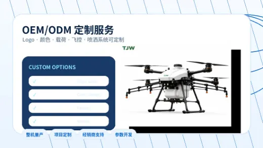
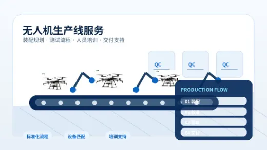

Agricultural Spraying Drone Buying Guide for Crop Protection Projects
Learn how to compare payload, spraying system, field coverage, flight stability, and OEM/ODM options before selecting an agricultural UAV platform.
Read guideExplore practical articles about agricultural spraying drones, VTOL mapping drones, industrial inspection UAVs, OEM/ODM customization, and production line service. These guides are written for distributors, project buyers, and teams evaluating industrial UAV solutions.
A focused knowledge hub helps search engines understand TJW's expertise while giving buyers useful information before they contact the factory.
Learn how to compare payload, spraying system, field coverage, flight stability, and OEM/ODM options before selecting an agricultural UAV platform.
Read guide
Understand why VTOL drones are useful for runway-free launch, long-distance missions, mapping, inspection, and wide-area UAV operations.
Read insight
Review practical UAV inspection use cases for power lines, industrial parks, pipelines, facility patrols, emergency response, and safety monitoring.
Read article
See what buyers should confirm about cameras, RTK positioning, route planning, image capture, and deliverables for surveying UAV projects.
Read guide
Prepare clear requirements for brand label, payload, color, software, documentation, quantity, packaging, and after-sales support.
Read checklist
For buyers planning local assembly or production, compare process planning, testing support, staff training, and long-term technical service.
Read insightEach topic targets practical search intent from UAV distributors, agricultural operators, mapping teams, inspection contractors, and OEM/ODM buyers.
An agricultural spraying drone should be selected around the crop type, field size, spraying width, tank capacity, droplet performance, and local service plan. For distributors, customization and spare parts availability are also important because customers often need different nozzles, pumps, flight settings, and payload options.
VTOL drones combine vertical takeoff with fixed-wing cruise efficiency. This makes them useful when a project requires long range but has limited launch space. Buyers should evaluate mission distance, payload weight, cruise endurance, control range, and data workflow before choosing a VTOL platform.
Industrial inspection drones help teams reduce manual risk, collect visual data faster, and reach areas that are difficult to access. Common applications include power line patrols, facility inspection, pipeline monitoring, park security, emergency response, and public safety support.
For surveying and mapping projects, buyers should confirm the required output before selecting a drone. Orthophotos, 3D models, construction measurement, land planning, and environmental monitoring may require different payloads, route settings, and data processing workflows.
A clear OEM/ODM brief helps reduce communication time and improves project accuracy. Buyers should define application field, quantity, branding, payload requirements, target market, local regulations, packaging needs, and after-sales expectations before production planning begins.
For customers planning a local UAV assembly or production capability, the partner should provide more than product supply. Important support includes production flow planning, equipment matching, testing and calibration process guidance, staff training, and long-term technical communication.
This page is designed to support long-tail search visibility for industrial UAV buyers. It connects product categories, use cases, and purchasing questions so search engines can better understand the TeJieWen (TJW) website.